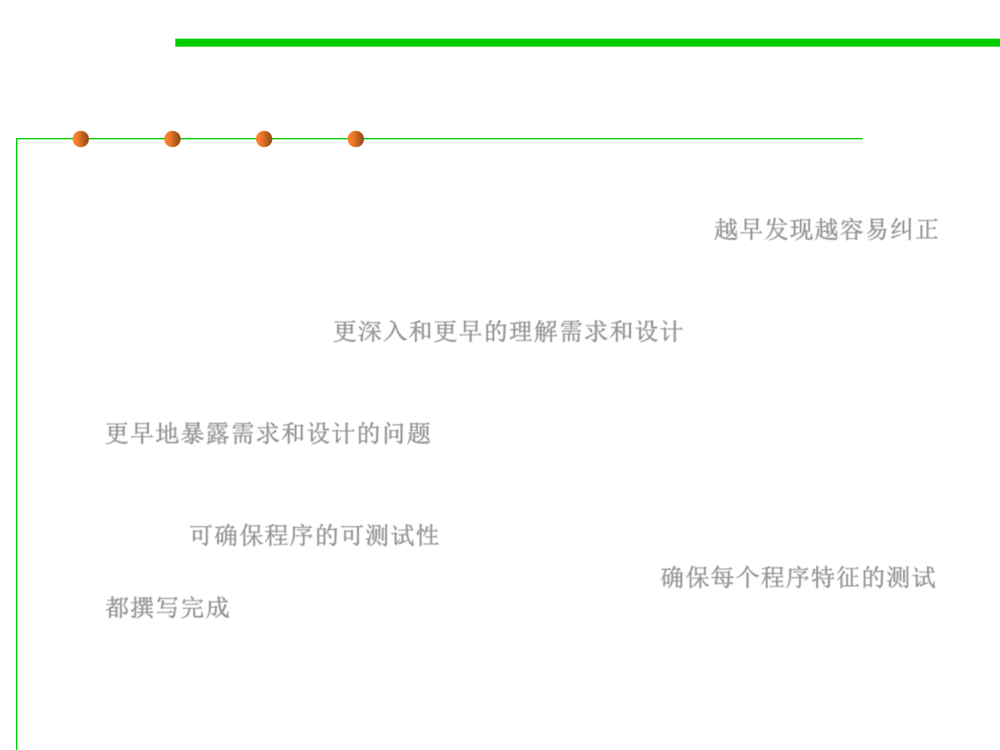

Test First or Test Last?
7.5 Testing and Test-First Programming
▪ Many reasons encourage developers to write test cases first:
– To detect defects earlier and correct them more easily 越早发现越容易纠正
– To lead to a deeper and earlier understanding of the product requirements,
ensures the effectiveness of the test code, and maintains a continual focus
on software quality. 更深入和更早的理解需求和设计
– To write test cases first exposes requirements problems sooner, before the
code is written, because it’s hard to write a test case for a poor requirement.
更早地暴露需求和设计的问题
– To ensure that the application is written for testability, as the developers
must consider how to test the application from the outset rather than adding
it later. 可确保程序的可测试性
– To ensure that tests for every feature get written. 确保每个程序特征的测试
都撰写完成